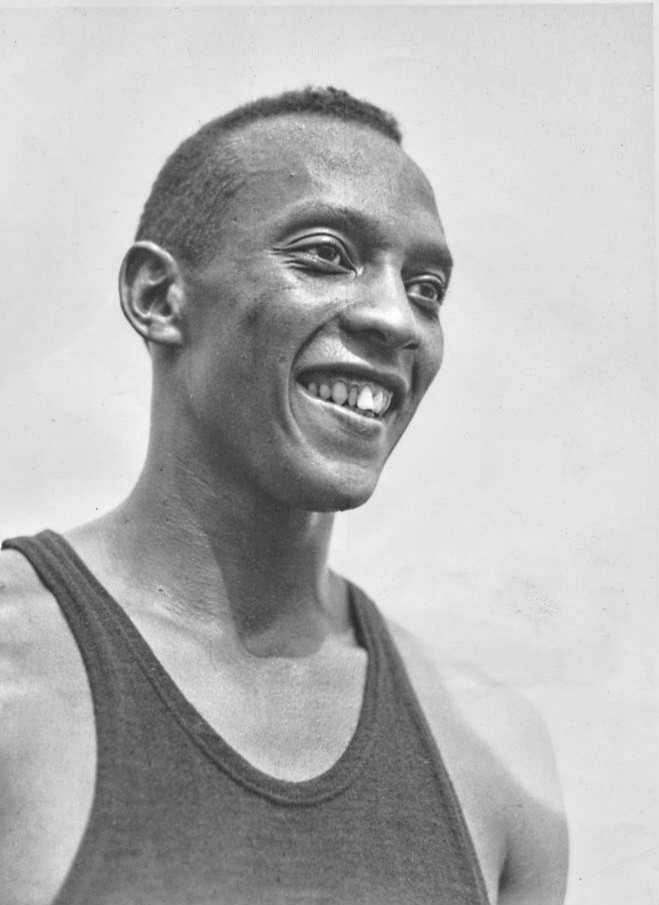

Jesse Owens conquista su cuarta medalla de oro y es el rey de los Juegos de Berlín
Con la posta de 4x100, que batió el récord mundial, el atleta de Alabama sumó su cuarto título en unos Juegos concebidos como vidriera de la doctrina racial del anfitrión. El estadio lo ovaciona por su nombre; la teoría del palco no encuentra quién la corra.

El estadio olímpico, cien mil almas bajo las banderas del Reich, coreó esta tarde un nombre que la propaganda del anfitrión no tenía previsto: Jesse Owens. El equipo americano ganó la posta de 4x100 metros con récord mundial, 39 segundos y 8 décimas, y el hombre que la lanzó desde el primer relevo colgó de su cuello la cuarta medalla de oro de estos Juegos, tras las de los 100 metros, los 200 y el salto en largo. Ningún atleta había logrado semejante cosecha en unos mismos Juegos. El público alemán, que lo persigue a la salida de los entrenamientos para pedirle autógrafos, lo despidió de pie, gritando su nombre a la manera local.
La escena merece su marco. Alemania montó estos Juegos como una demostración: estadios colosales, organización sin falla, cámaras que registran cada prueba para un gran film, y una doctrina oficial que proclama la jerarquía de las razas y ha escrito leyes para humillar a una parte de sus propios ciudadanos. Sobre ese escenario, un atleta negro de veintidós años, nieto de esclavos e hijo de un peón de algodón de Alabama, resultó el soberano indiscutido de la competencia. Owens corrió, saltó y venció con una soltura que hasta los diarios del régimen, obligados a la sordina, describen a regañadientes con admiración. La doctrina sigue en los carteles; la pista dijo otra cosa.
La consagración de hoy trae, sin embargo, una sombra propia: para la final del relevo, el comando americano retiró a última hora a Glickman y Stoller, los dos únicos atletas judíos del equipo de pista, que llevaban semanas preparándose para esta carrera. La versión oficial habla de asegurar la victoria con los hombres más veloces; en la villa olímpica se murmura que hubo consideraciones menos deportivas, y los dos relegados no ocultan su amargura. La victoria fue tan holgada —récord del mundo incluido— que el argumento de la necesidad se corre solo. Quede anotada la fecha con las dos tintas: la del triunfo y la de la mancha.
La estampa que estos Juegos legarán no salió del palco sino del foso de salto en largo: días atrás, con Owens al borde de la eliminación por dos intentos nulos, su gran rival alemán, el rubio Luz Long, se le acercó a darle un consejo —adelantar la marca del pique, contaría después el americano— y Owens pasó a la final, donde venció al propio Long con un salto formidable. El alemán fue el primero en abrazarlo, y ambos dieron la vuelta al estadio del brazo, ante el palco oficial y ante cien mil testigos. Del anfitrión, que en la primera jornada saludaba a los vencedores en su palco, Owens no recibió apretón de manos; recibió, en cambio, la ovación repetida de su público.
Owens vuelve a casa como el atleta más grande de su tiempo, y conviene decir a qué casa vuelve: a un país donde deberá viajar en la parte trasera de los ómnibus y entrar por la puerta de servicio de más de un hotel que se disputará agasajarlo. La contradicción no es sólo alemana, y estos Juegos la dejaron a la vista de todos. El anfitrión quiso una vidriera para su doctrina y la historia le concedió lo contrario: la refutación en zapatillas, cuatro veces coronada. Las banderas y los himnos pasarán; queda la imagen de dos muchachos, uno negro y uno rubio, del brazo bajo cien mil miradas, desmintiendo juntos todo lo demás.